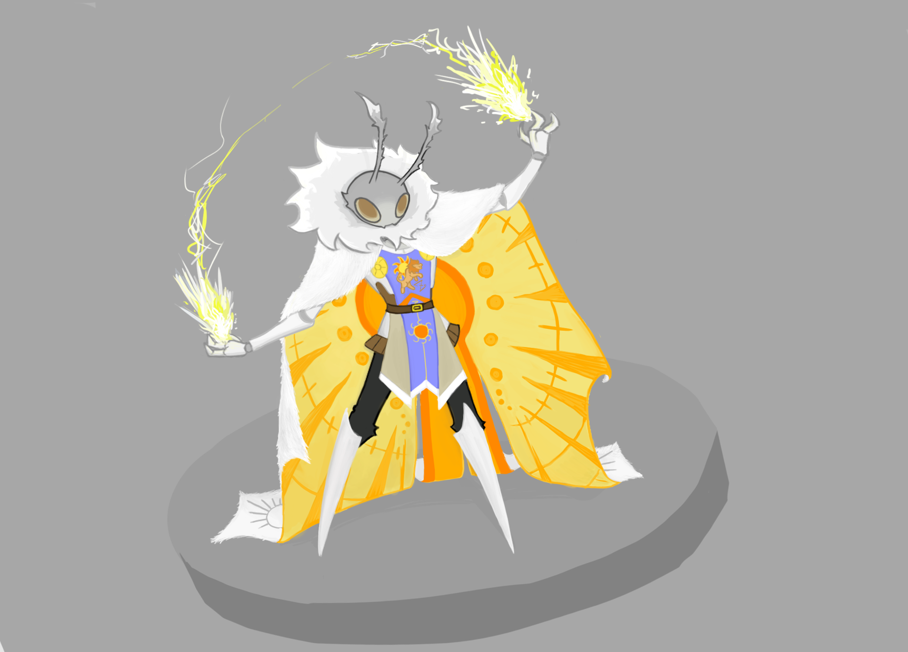
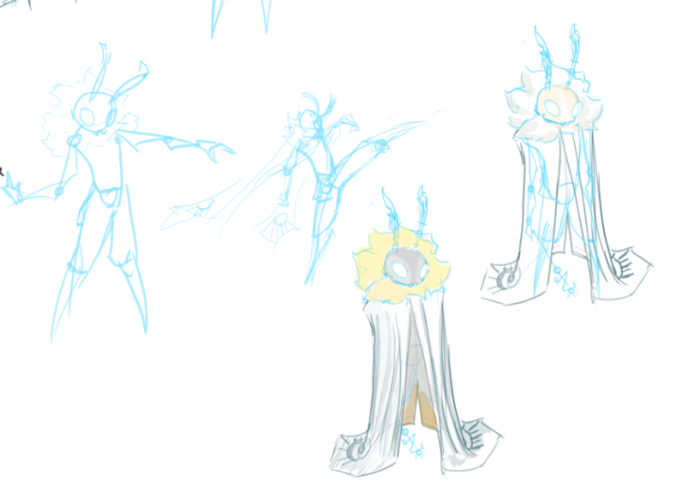
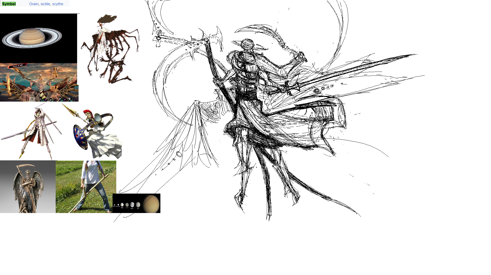
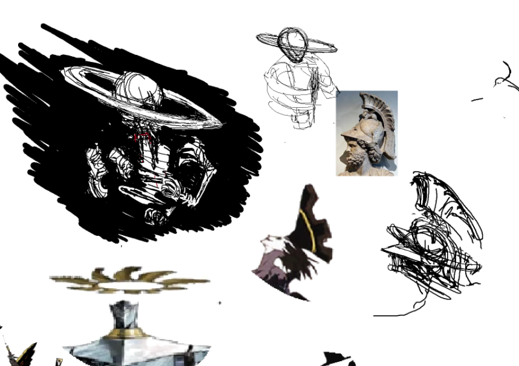

Things I've done for miscellania

Commissions and Gifts
What I do for Killin:






Projects to the cause


Works of Olde
Self Portraits; Coveting of the Skull / Spitting Plastic Knives


Typographic Experimentations


All Children Are Nihilists

Egg.

Background Practices


A design on Water Conservation; Unfinished
 >
>
Sketches and Then on
Just for Goofs and Gafs